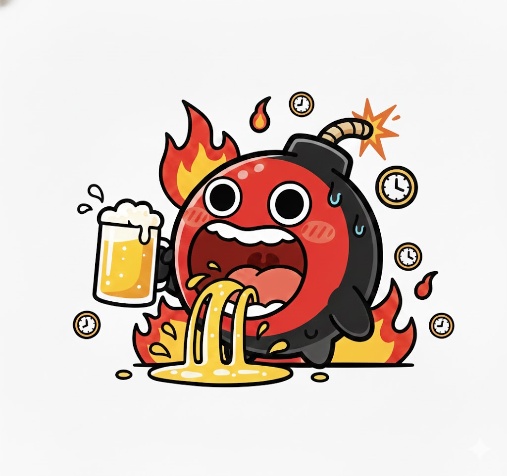

あなたの酒タイプは…
ハイテンション時限爆弾 (LOUY)

「ノリは最高だが、体はガラス…」主導権を握って場を盛り上げるが、限界を超えると一瞬で爆発する陽キャの弱体化版。
基本的特徴
基本的特徴：瞬発力特化のパフォーマー
飲み会における「初速」において右に出る者はいません。開始5分でその場のボルテージを最高潮まで引き上げる、天性のスター性を持っています。しかし、その輝きは非常に短命です。体のスペックがそのパッションに追いついておらず、前半のハイパフォーマンスと引き換えに、中盤以降は急激に機能停止（あるいは暴走）します。この「美しくも儚い」散り際こそが、このタイプの真骨頂と言えるでしょう。
飲み会での特徴
飲み会における特徴：一軒目限定のファンタジスタ
一杯目から盛り上げ、誰よりも早くエンジンを全開にする姿は、まさに会の主役です。しかし、2軒目に移る頃には、椅子に座ったままフリーズしているか、お手洗いの住人と化している姿が目撃されます。翌朝、自分のスマホのカメラロールに身に覚えのない「深夜のテンションすぎる自撮りや動画」が大量保存されているのを見て、絶望するのがルーティーンです。
長所と魅力
長所と魅力：空気を一変させる爆発力
重苦しい雰囲気や、緊張感のある会食の場などで、このタイプの「理性のリミッター解除」は一気に場をカジュアルに変化させます。計算のない純粋なノリは、時に論理では解決できない人間関係の壁を壊し、メンバー間の距離を劇的に縮めることがあります。その「使い切り」の潔さに、周囲は一種の敬意を抱いています。
成長のヒント
持続力
「中盤のペース配分」という概念を脳内にインストールしましょう。全エネルギーを一軒目で使い果たそうとせず、デザートまで意識を保つことが、真のコミュ強への道です。